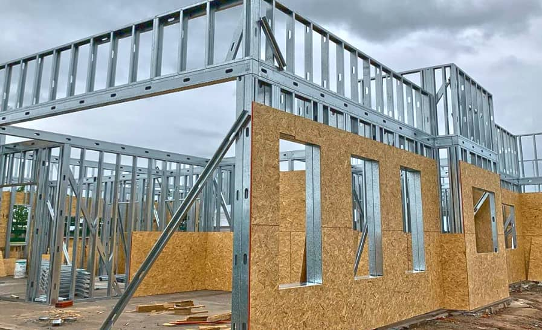
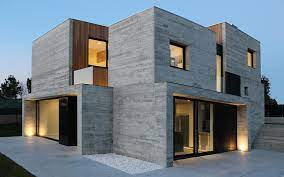
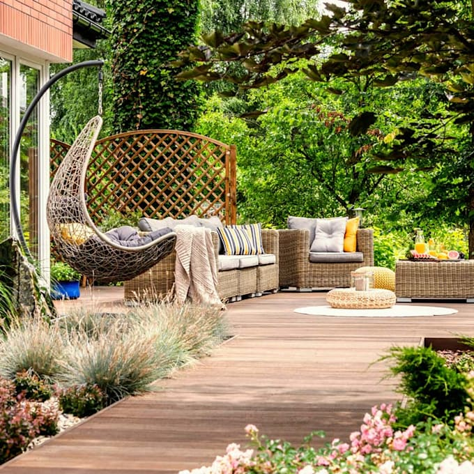

Conoce las tendencias del mercado
Steel Framing
El steel framing es un sistema constructivo abierto, ampliamente utilizado en todo el mundo, en el cual la estructura resistente está compuesta por perfiles de chapa de acero estructural galvanizado de muy bajo espesor, junto a una cantidad de componentes o sub-sistemas (estructurales, aislaciones, terminaciones, etc.) funcionando como un conjunto. Una de las características fundamentales del proceso constructivo es su condición de montaje en seco. A continuación enumeramos algunas características que lo describen de manera general: Proyecto: No existen restricciones respecto de las características arquitectónicas ni de la situación geográfica de la obra. Prácticamente cualquier proyecto pensado en sistemas tradicionales puede “traducirse” al steel framing. Estructura: Se compone de un conjunto de perfiles de acero galvanizado de muy bajo espesor, separados entre sí generalmente cada 40 o 60 cm. Montaje: Se realiza sobre fundaciones tradicionales, con la ventaja de que las cargas por peso propio introducidas por la construcción son mucho menores que el caso de sistemas constructivos pesados (hormigón, mampostería, etc.) Cerramientos: Tanto los interiores como los exteriores son en general resueltos mediante la colocación de distintos tipos de placas sujetas a la estructura metálica con tornillos autoperforantes. Terminaciones exteriores: El sistema admite una gran diversidad, incluyendo placas cementicias, revoques elastoplásticos, entablonados e inclusive terminaciones tradicionales como ladrillo o piedra. Eficiencia energética: Se consigue un muy elevado nivel de aislación térmica mediante el uso de materiales aislantes en la cavidad interior de los paneles resultantes, con el consiguiente ahorro de costos por consumo de energía para calefacción o refrigeración. Instalaciones: Se distribuyen por el interior de la estructura, a través de las perforaciones previstas en la perfilería. Así disminuyen considerablemente los tiempos de instalación y se facilitan futuras eventuales reparaciones o modificaciones.
Hormigon visto
Si bien es cierto que el hormigón a la vista es sinónimo de economía por no requerir revestimientos adicionales, también obliga a cuidar cada etapa del proceso. El mismo, se inicia con el proyecto, y continúa con las involucradas en obra, buscando siempre minimizar defectos para lograr la textura y terminación deseada. Para ello, se requiere trabajar con personal de obra calificado y disponer de una dosificación de hormigón adecuadamente diseñada para tal fin. Entre los numerosos aspectos a tener en cuenta, se pueden mencionar: Encofrados: se deben limpiar, colocar y fijar correctamente para asegurar su estabilidad y evitar deformaciones del mismo. Humedecer antes de hormigonar, principalmente en épocas calurosas para evitar que la madera absorba el agua del hormigón. También se sugiere usar encofrados metálicos y protegerlos del sol para evitar desecamiento en la capa superficial del hormigón de recubrimiento. Desmoldantes: se recomienda productos reconocidos para evitar la adherencia del hormigón, no así el empleo de gasoil o aceites solubles en agua que pueden producir manchas o encapsular aire en forma de burbujas entre el encofrado y el hormigón. Armaduras: el estado superficial de las mismas deberá ser limpio, libre de herrumbre y sustancias extrañas (grasas, aceites, etc.) para evitar futuras manchas. El recubrimiento deberá realizarse con separadores, en especial plásticos para evitar síntomas de corrosión y no ser menor a 30 mm para evitar la aparición de fisuras por asentamiento plástico. Consolidación del hormigón: es clave disponer de equipo vibrador y usarlo correctamente para evitar defectos en la superficie, pudiendo ser también acompañado con golpes de martillos de goma o madera. El desencofrado debe ejecutarse cuidadosamente y a su debido tiempo (48 horas aprox.) para evitar daños superficiales. Respecto a un hormigón convencional es recomendable un mayor tiempo de curado. Por último y muy importante, es la atención que se debe brindar a los aspectos técnicos de la mezcla, donde el proveedor de hormigón elaborado deberá trabajar minuciosamente en el diseño de la misma y controlar la calidad de cada materia prima utilizada. En cuanto al agregado grueso, se sugiere trabajar con tamaños que no superen los 12 o 19mm dependiendo de la estructura, y se recomienda cemento de la misma procedencia durante el transcurso de la obra, a fin de evitar cambios en sus tonalidades. Trabajar con una curva granulométrica continua, relación agua/cemento adecuada, y un uso cuidadoso de aditivos químicos, permite lograr una mezcla fluida sin segregación y controlada cohesión, evitando así, la formación de burbujas o arrastre de aditivo en caso de elevada exudación, generando manchas y/o mala terminación superficial. Cumplir entre otras cosas con estos aspectos, nos ayudará a lograr un hormigón visto de excelente terminación.
Parques
Terminaste la casa, terminaste la pileta y ahora... ¡falta el jardín! Al momento de decorar un parque se deben tener en cuenta muchos aspectos. Desde el diseño, el paisajismo, la diversidad en las plantas, generar diferentes rincones, poner juegos si hay chicos, hasta cómo organizar la iluminación y pensar en un fogón para compartir momentos inolvidables, son algunos de los aspectos en los que priorizar para dar un toque único a los espacios exteriores. Qué hay que tener en cuenta A la hora de elegir cómo vas a ambientar el espacio disponible, hay que definir si será un jardín decorativo o un jardín de uso cotidiano, en donde los animales, la familia y niños hacen que las funciones varíen. Decidir si habrá una parrilla, un fogonero, un estanque, fuentes de agua, livings o juegos. Proyectar es uno de los momentos más importante en la construcción. Sin dudas es el primero, y al que debemos prestar especial atención para no cometer ni arrastrar errores. Los jardines, al igual que las casas deben pensarse, diseñarse y construirse. “Una planificación exitosa requiere saber de antemano el uso que le vamos a dar a cada lugar. Si será de distracción, de ocio, para hacer algún deporte al aire libre, o tal vez el asado con amigos, el esparcimiento para los más chicos. Luego de tener en claro eso, hay que definir qué forma tendrá y cómo ha de funcionar”, precisa Damián Assin, de Pradines Paisaje. “Se pueden aplicar distintos estilos. Puede ser minimalista, moderno, campestre, rústico. Si les gustan las flores o solo el verde con plantas sin floración, qué colores quieren que predominen. Lo más importante es escuchar a los clientes para saber sus gustos y necesidades, objetivo primordial a la hora de diseñar y darle lugar a un espacio de confort, para disfrutar en pareja, con amigos o en familia”, confiesa Silvana Fava estudio de diseño Maika Deco & Diseño. Los muebles de exterior En cuanto al mobiliario, si estarán expuestos a la intemperie, tienen que ser resistentes al desgaste que produce el sol y la lluvia. Aunque estén ubicados en una galería, también lo sufren. El material más aconsejado es el aluminio, es de bajo peso y resistente a los cambios del clima; la madera bien dura es otra opción, pero necesita un cierto mantenimiento; y los muebles de PVC son otra buena opción. Si los muebles requieren de almohadones, es aconsejable usar las mismas telas que se utilizan en los barcos, por lo general es lona náutica, que se combinan con los colores del espacio, y armonizan el sector. “Un regio living para cuatro personas con mesa ratona incluida puede costar desde $30.000 hasta $200.000 dependiendo de los materiales que elijas”, remarca Ileana González, que junto a Mariela Pensato trabajan como diseñadoras urbanas. Es clave aprovechar ahora las liquidaciones de temporada para ambientar el jardín para todo el año con muebles, pérgolas, gazebos, sombrillas, reposeras y más. Mesa y sillas para 4 personas, entre $150.000 a $280.000 Sombrilla, entre $18.000 y $80.000 Gazebo, entre $5000 y $16.000 Parrilla, entre $45.000 y $70.000 Cómo parquizar A la hora de parquizar hay que tener en cuenta el uso que se le va a dar al lugar. No sólo variarán los materiales en caso de tener mascotas o niños, sino que también cambiará en caso de tener plantas y juegos para los más chicos. Si el espacio es muy utilizado, es fundamental colocar un césped resistente, como la grama bahiana. Hay que tener en cuenta que demanda mucha agua para propagarse y crecer, por lo que para este tipo de césped se recomienda instalar regadores. También puede hacerse la parquización mediante la aplicación de semillas que pueden ser de diferentes variedades como ryegrass, bermuda o kikuyo que no requieren tanta agua ni cuidado más que el corte semanal. Este método es más económico que los panes de grama bahiana aunque impide a los dueños de casa transitar el terreno hasta que el césped crezca y sea lo suficientemente fuerte como para poder soportarlo. El presupuesto para césped y plantas va a depender en buena medida de la cantidad de vegetación inicial que se coloque y del tamaño del jardín. Además, hay que considerar el tamaño y edad de las plantas, siendo las más añosas y grandes las de mayor valor, esto es así porque han tenido que estar bajo cuidado en el vivero durante más tiempo en relación a una planta de menor tamaño y edad. “Hay que estar atentos a no colocar especies que puedan traer algún tipo de alergia en la piel más sensible como es la de los más jóvenes si estarán en contacto con ellas”, aclara Ileana. M2 de grama bahiana, entre $500 y $600 Armado de una huerta, entre $18.000 y $35.000 Compostera $13.500 Invernadero, entre $40.000 y $140.000 (según tamaño y materiales) Playroom al aire libre El sector juegos se resuelve usualmente con un buen carpintero. La gran oferta de servicios que actualmente nos proponen las redes sociales nos pone en contacto cada vez más con un rubro muy vinculado a la juguetería de antaño y de calidad, y al uso de materias primas renovables como lo es la madera. Es cada vez más común la construcción de trepadores (esos con planos inclinados y tablitas para poder subir y luego deslizar por un tobogán), areneros (siempre con tapa para garantizar la limpieza), saltarines, sube y bajas, etc. También deben considerarse los juegos de pelota delimitando una buena porción de césped, la cual estará sometida a mayor tránsito y por ende a un mantenimiento diferencial. Es importante que el sector juegos no esté alejado de la casa principal y esté siempre a la vista del adulto responsable. Cama elástica, entre $16.000 y $35.000 Calesita de jardín $13.000 Trepador de madera con toboganes, a partir de $100.000 Casita de madera, a partir de $50.000 Hamacas, fogones, pérgolas y estanques Para decorar y diseñar un jardín no sólo se tiene en cuenta las plantas y los colores. En los últimos años se convirtieron en tendencia las hamacas, que dan un ambiente jovial y fresco, los estanques, las luces de colores y mucho más. Actualmente, quienes ambientan su espacio exterior suelen instalar fogoneros, algo que es fundamental para que el jardín quede completo y así poder disfrutarlo de noche, tanto los adultos como los adolescentes de la casa. “Solemos resolverlo dependiendo del gusto del cliente, a veces combinado con piedras. Es un lindo punto de encuentro nocturno y mágico”, agrega Ileana. Por otra parte, algo que es muy usual ver en los jardines de los argentinos son las pérgolas. Pueden ser de madera o hierro con techo de chapa sin que quede a la vista para proteger completamente los muebles y dar sombra total, con techo de tela o abiertas que, por lo general, se combinan con plantas trepadoras aromatizadas a los costados, como agaves, dietes y gramíneas, que son de bajo mantenimiento y bajo costo. Cada vez más se están usando los estanques en los jardines. Es clave investigar o dar con un profesional especialista en jardinería acuática para emprender este espacio. “Antes de realizarlo hay que tener en cuenta la ubicación del sol, el tipo de plantas a combinar y el tamaño del estanque, para así armarlo acorde a las dimensiones de la casa”, reconoce Carla Sellares, de jardines acuáticos 3Elementos. La construcción de un estanque puede ser de cemento (como una pileta pero más chico y con un diseño propio) o lo que denomina de tipo natural: se realiza una excavación y se colocan dos materiales imprescindibles que son una tela geotextil y una membrana de un espesor no menor a 500 micrones. En ambos casos lo ideal es que lleve una bomba para recircular el agua. Y al presupuesto deben sumarse las platas y los peces.